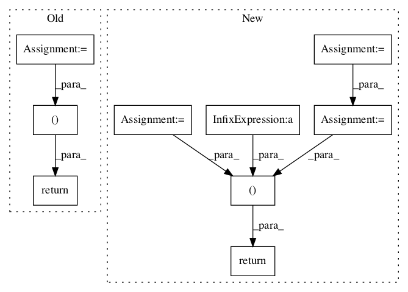

70cf20f6cf5e21c3b6165067483b925db61c161c,deepmedic/neuralnet/ops.py,,applyDropout,#Any#Any#Any#Any#Any#Any#,29

Before Change
else :
inputImgAfterDropout = inputTrain
inputImgAfterDropoutInference = inputInference
inputImgAfterDropoutTesting = inputTesting
return (inputImgAfterDropout, inputImgAfterDropoutInference, inputImgAfterDropoutTesting)
def applyBn(rollingAverageForBatchNormalizationOverThatManyBatches, inputTrain, inputVal, inputTest, inputShapeTrain) :
numberOfChannels = inputShapeTrain[1]
After Change
if dropoutRate > 0.001 : //Below 0.001 I take it as if there is no dropout at all. (To avoid float problems with == 0.0. Although my tries show it actually works fine.)
keep_prob = (1-dropoutRate)
random_tensor = keep_prob
random_tensor += tf.random_uniform(shape=inputTrainShape, minval=0., maxval=1., seed=rng.randint(999999), dtype="float32")
// 0. if [keep_prob, 1.0) and 1. if [1.0, 1.0 + keep_prob)
dropoutMask = tf.floor(random_tensor)
// tf.nn.dropout(x, keep_prob) scales kept values UP, so that at inference you dont need to scale then.
inputImgAfterDropoutTrain = inputTrain * dropoutMask
inputImgAfterDropoutVal = inputVal * keep_prob
inputImgAfterDropoutTest = inputTest * keep_prob
else :
inputImgAfterDropoutTrain = inputTrain
inputImgAfterDropoutVal = inputVal
inputImgAfterDropoutTest = inputTest
return (inputImgAfterDropoutTrain, inputImgAfterDropoutVal, inputImgAfterDropoutTest)
def applyBn(rollingAverageForBatchNormalizationOverThatManyBatches, inputTrain, inputVal, inputTest, inputShapeTrain) :
numOfChanns = inputShapeTrain[1]
In pattern: SUPERPATTERN
Frequency: 3
Non-data size: 9
Instances
Project Name: Kamnitsask/deepmedic
Commit Name: 70cf20f6cf5e21c3b6165067483b925db61c161c
Time:
Author: null
File Name: deepmedic/neuralnet/ops.py
Class Name:
Method Name: applyDropout
Project Name: asyml/texar
Commit Name: ecbe066e40882b166401b70ae9c4f1d535c93b12
Time:
Author: null
File Name: texar/losses/adv_losses.py
Class Name:
Method Name: binary_adversarial_losses
Project Name: calico/basenji
Commit Name: 5ba781c281d60ad03d0c8088400a73802dd82d03
Time:
Author: null
File Name: basenji/ops.py
Class Name:
Method Name: per_target_r2